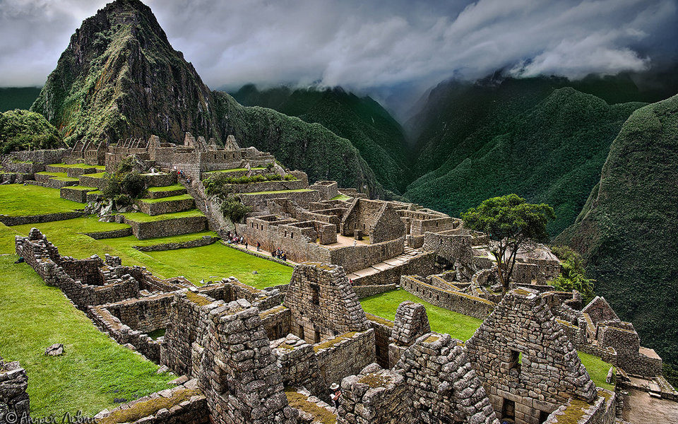
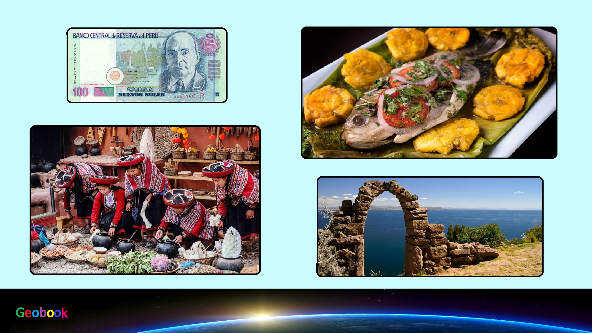

×

Peru
Климат
Климат на побережье (Коста) — засушливый и полузасушливый, с высокими температурами и очень небольшим количеством осадков. В Андах (Сьерра) наблюдается прохладный и холодный климат с дождливым летом и очень сухой зимой. На восточных низменностях преобладает экваториальный климат с жаркой погодой и дождями в течение всего года. Таким образом, пустынное побережье, высокогорья Сьерры и лесистые пространства Амазонской низменности и восточных склонов Анд (Сельва) представляют собой климатические области, резко отличающиеся друг от друга. Климат в районе Косты и западных склонов Анд пустынный, почти без осадков. Среднемесячные температуры на побережье от 15 °С до 25 °С. В Сьерре климат высокогорный, летом влажный, субэкваториальный на севере (осадков до 1000 мм в год) и тропический на юге (осадков 700—800 мм). Среднемесячные температуры на плоскогорьях от 12 °С до 16 °С на севере и от 5 °С до 9 °С на юге, очень велики (до 20 °С) суточные колебания. На восточных склонах Анд и в Сельве климат экваториальный постоянно влажный. Температуры на равнине высокие в течение всего года (от 24 °С до 27 °С), осадков до 3000 мм в год.
____
